About Me
This page is about me and what I enjoy doing:
- Frontend development
- Backend development
- Test-driven development
- Brazilian Jiu-Jitsu
How I became a web developer
Hey there! I'm Moritz, a passionate full-stack web developer based in Aschaffenburg. My journey into web development started with a simple curiosity and grew into a deep-seated passion.
I first encountered programming during my studies but initially pursued a career in sales. However, I eventually discovered that programming was my true passion.
Currently, I'm focusing on learning HTML, CSS, and JavaScript, laying the foundation for my journey as a web developer. Through self-directed learning and online resources, I'm mastering these languages and honing my skills in front-end development.
Venturing into the world of programming has been an exciting journey for me. From the moment I started coding, I knew I had found my true calling. The challenge of solving problems and creating something tangible with code fuels my passion for development.
Beyond coding, I enjoy exploring the great outdoors, experimenting in the kitchen, and immersing myself in a good book. I believe in living life to the fullest and constantly pushing the boundaries of what's possible.
I'm excited about the endless possibilities in the ever-evolving world of web development. Whether it's building intuitive user interfaces or exploring emerging technologies, I'm always eager to take on new challenges and expand my horizons.
Thanks for taking the time to learn a bit about me. Feel free to reach out if you'd like to collaborate or connect over our shared love for all things tech!
MY JOURNEY INTO BRAZILIAN JIU-JITSU
In addition to my passion for web development, another significant aspect of my life is Brazilian Jiu-Jitsu (BJJ). My journey into this martial art began as a quest for personal growth and physical fitness, but it evolved into a profound journey of self-discovery and discipline.
I first discovered Brazilian Jiu-Jitsu during a time when I was seeking a new challenge and a way to stay active outside of the digital realm. Intrigued by its emphasis on leverage, technique, and mental strategy, I decided to step onto the mats of a local BJJ academy and give it a try.
From the moment I stepped onto the mats, I was captivated by the artistry and complexity of BJJ. I quickly realized that BJJ is not just about physical strength or athleticism; it's about mental fortitude, problem-solving, and the relentless pursuit of improvement.
As I immersed myself in training, I discovered a supportive community of fellow practitioners who shared my passion for growth and learning. Through countless hours of drilling, sparring, and grappling, I not only improved my physical conditioning but also developed invaluable life skills such as perseverance, humility, and resilience.
BJJ has taught me to embrace discomfort, confront my limitations, and push through adversity both on and off the mats. It's a constant reminder that growth occurs outside of our comfort zones and that progress is the result of consistent effort and dedication.
Beyond the physical benefits, BJJ has enriched my life in countless ways. It has instilled in me a sense of confidence, discipline, and respect for myself and others. It's a journey that continues to challenge and inspire me, pushing me to strive for excellence in all areas of my life.
Whether I'm rolling on the mats or writing code behind a screen, the lessons I've learned from Brazilian Jiu-Jitsu continue to influence and shape my approach to life. It's a journey that I'm grateful to be on, and I look forward to the adventures and growth that lie ahead.
Download my CV
Toolbelt
 
